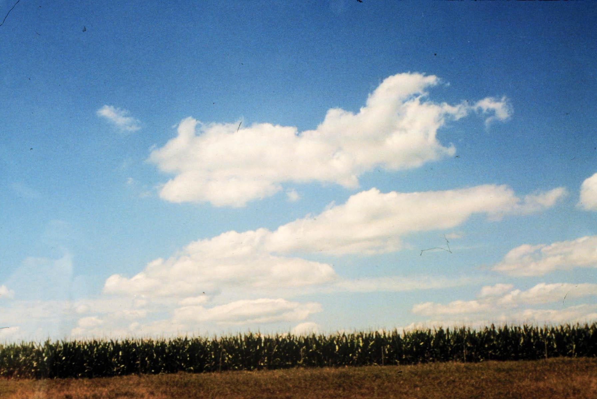

My mind is really working overtime here, but I do believe I see something helping to direct the movement of the clouds as they float across the sky. They don´t want to have an accident and bump into each other! Cloud scrapes are hard to fix. | |
|  | Section Index |
Section Index | Main Menu | Homepage Fair use of these photos for educational purposes is permitted. | |
|---|---|